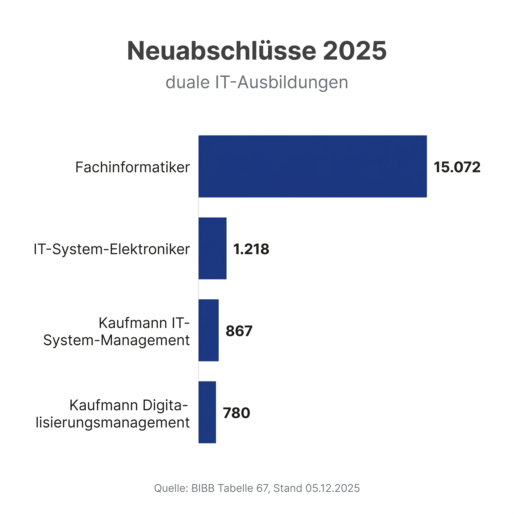
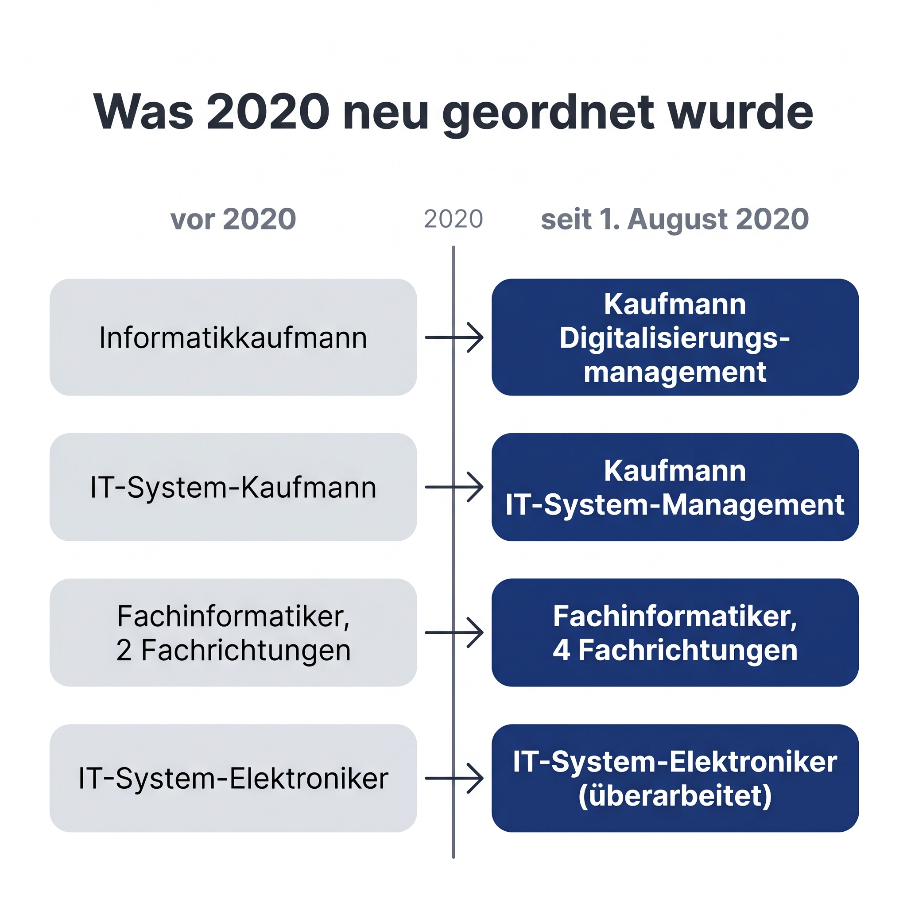
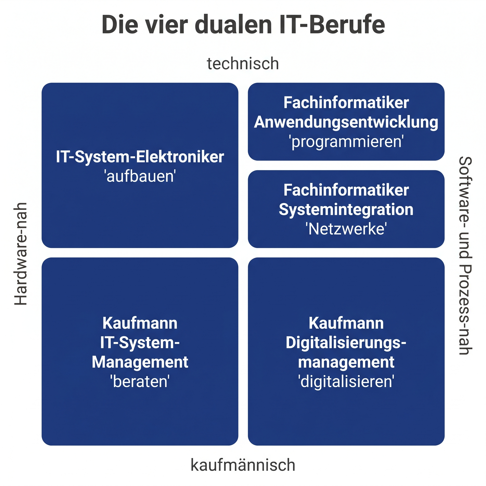
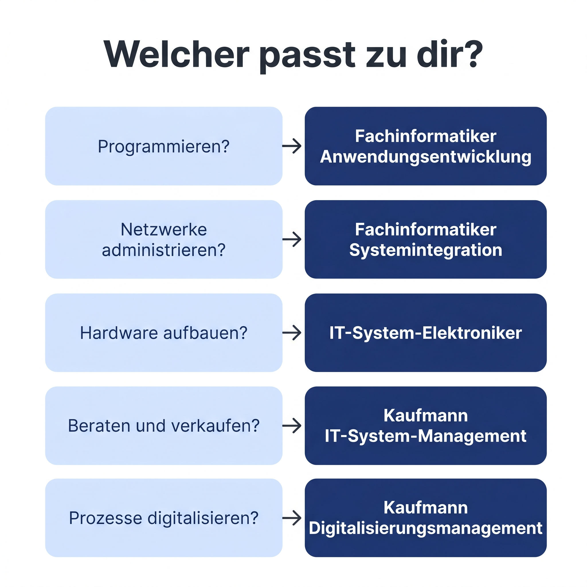

60-Sekunden-Überblick. Für Schulabgänger, Eltern und Quereinsteiger. Spickzettel zum Aufnehmen.

Es gibt nicht eine IT-Ausbildung. Es gibt vier. Aber 84 Prozent aller IT-Azubis machen denselben Beruf.
BIBB Tabelle 67, Neuabschlüsse 2025, Stand 05.12.2025: Fachinformatiker 15.072, die anderen drei zusammen 2.865. 15.072 von 17.937, das sind 84 Prozent. Quelle und Tabelle in den Kommentaren.
Der Anteil ist stabil: 2024 waren es ebenfalls 84 Prozent. Die absoluten Zahlen sind aber alle gesunken, der bundesweite Trend zu weniger Ausbildungsverträgen zeigt sich auch in der IT.

Seit dem 1. August 2020 sind die vier dualen IT-Berufe neu geordnet. Aus dem alten Informatikkaufmann wurde der Kaufmann für Digitalisierungsmanagement, aus dem IT-System-Kaufmann der Kaufmann für IT-System-Management. Verwirrend, aber wichtig.
Die alten IT-Berufe stammten aus 1997. Das BIBB hat 2020 die Inhalte modernisiert: IT-Sicherheit und Datenschutz wurden ausgebaut, beim Fachinformatiker kamen die Fachrichtungen Daten- und Prozessanalyse sowie Digitale Vernetzung dazu. Die gestreckte Abschlussprüfung wurde eingeführt.

Vier Berufe, zwei Achsen. Oben technisch, unten kaufmännisch. Links Hardware-nah, rechts Software- und Prozess-nah.
Oben links: der IT-System-Elektroniker. Er montiert Server-Racks im Rechenzentrum, verlegt Netzwerkkabel im Krankenhaus, prüft die Stromversorgung normgerecht. Arbeitgeber: Systemhäuser, Telekom, Industrie-IT.
Oben rechts ist der Fachinformatiker, der mit Abstand größte IT-Beruf. Wichtig: Fachinformatiker ist nicht ein Beruf, sondern vier Fachrichtungen. Die zwei häufigsten zeige ich getrennt: Anwendungsentwicklung programmiert Software für interne und externe Kunden. Systemintegration administriert Netzwerke und Server, ohne den elektrotechnischen Teil. Dazu kommen noch Daten- und Prozessanalyse sowie Digitale Vernetzung.
Unten links: der Kaufmann für IT-System-Management. Er berät Kunden, erstellt Angebote, verkauft komplette IT-Lösungen. Typisch im Systemhaus oder beim IT-Dienstleister.
Unten rechts: der Kaufmann für Digitalisierungsmanagement. Er digitalisiert Geschäftsprozesse im eigenen Unternehmen. Analysiert Workflows, ermittelt Bedarf, führt neue Software ein.
Beide arbeiten mit IT-Systemen. Faustregel: wer physisch Hardware montiert und Stromversorgung anschließt, ist IT-System-Elektroniker. Wer Server konfiguriert und Netzwerke administriert, ohne den elektrotechnischen Teil, ist Fachinformatiker Systemintegration.
Zweite Verwechslung: die beiden Kaufleute. IT-System-Management verkauft IT-Lösungen an externe Kunden. Digitalisierungsmanagement digitalisiert die Prozesse im eigenen Unternehmen, also intern.
Die zwei nicht gezeigten Fachinformatiker-Fachrichtungen: Daten- und Prozessanalyse arbeitet an Datenverfügbarkeit und -qualität für digitale Geschäftsprozesse. Digitale Vernetzung kümmert sich um Schnittstellen zwischen Netzwerken und cyber-physischen Systemen, also klassischer Industrie-4.0-Kontext.
Hinweis: Die 2x2-Matrix ist meine didaktische Vereinfachung. BIBB klassifiziert die Berufe offiziell nicht so. Aber als Entscheidungs-Werkzeug funktioniert sie.

Welcher passt zu dir? Frag dich konkret: Programmieren? Fachinformatiker Anwendungsentwicklung. Netzwerke administrieren? Fachinformatiker Systemintegration. Hardware aufbauen? IT-System-Elektroniker. Beraten und verkaufen? IT-System-Management. Prozesse digitalisieren? Digitalisierungsmanagement.
Und keine Sorge, das erste Ausbildungsjahr ist für alle vier Berufe gemeinsam. Du legst dich erst danach fest.
Die ersten sieben Berufsbildpositionen sind in allen vier Berufen identisch. Ein Wechsel im ersten Jahr ist deshalb praktisch ohne Zeitverlust möglich. Mit Abitur kannst du die Ausbildung um bis zu 12 Monate verkürzen, Mindestdauer 18 Monate. Realistisch sind 2,5 Jahre.
Welcher wärst du? Schreib es in die Kommentare. In der nächsten Folge schauen wir uns die vier Fachrichtungen des Fachinformatikers im Detail an.
Bei der Matrix-Sektion langsam sprechen, nach jedem Quadrant eine Mikropause einbauen, damit der Zuschauer mitkommt. Insgesamt rund 180 Wörter über 60 Sekunden, das sind 3 Wörter pro Sekunde, ein TikTok-typisches Tempo.
BIBB, Bundesinstitut für Berufsbildung
Bundesgesetzblatt, Februar 2020
BERUFENET, Bundesagentur für Arbeit